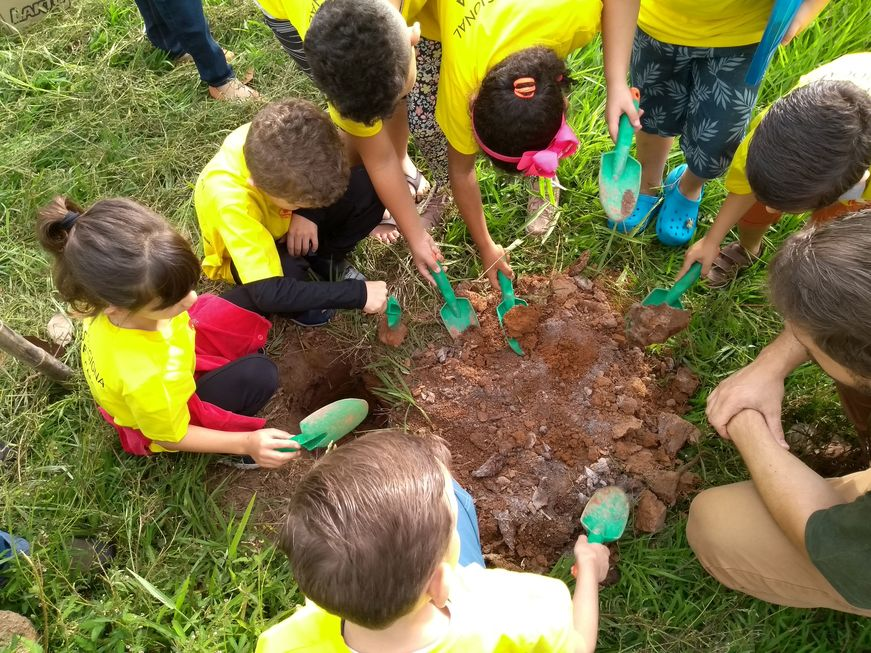

Projeto Semeando o Futuro
Promovemos a educação ambiental em escolas públicas, incentivando o plantio de árvores e o cuidado com o meio ambiente.
Promovemos a educação ambiental em escolas públicas, incentivando o plantio de árvores e o cuidado com o meio ambiente.

Apoiamos famílias em situação de vulnerabilidade com doações de cestas básicas e ações comunitárias de solidariedade.
Você pode contribuir com doações financeiras, materiais ou com o seu tempo como voluntário.
Quero ser voluntário